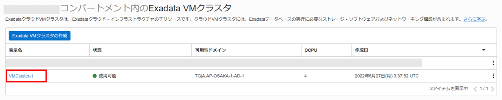
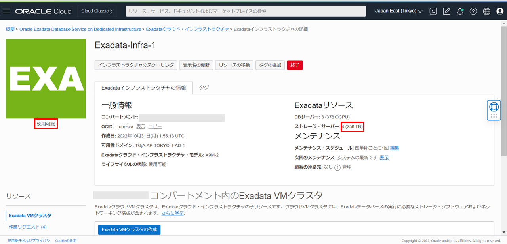

はじめに
Oracle Cloud Infrastructure Exadata Database Service on Dedicated Infrastructure (ExaDB-D) のスケーリングの対象は、2種類あります。１つは、割り当てられているH/Wリソース内で利用可能な、OCPU数のスケール・アップ/ダウン。データベースや仮想マシンを再起動することなく、処理を継続したままオンラインで変更可能です。また、VMクラスタ全体に対しての変更になります。そのため、例えばノード毎にCPUコア数を変えることはできないので、仮想マシン数の倍数が指定可能になります。もう１つは、インフラストラクチャー部分のデータベース・サーバーとストレージ・サーバーのスケール・アップ(ダウンは不可)。こちらは、X8M以降のモデルで可能で、CPU・メモリ・ストレージなどH/W的に割り当てられている専有リソースを増やしたい場合に、オンラインで追加が可能です。
目次 :
前提条件 :
- 101 : ExaDB-Dを使おうを通じてExaDB-Dの作成が完了していること
- Oracle Cloud Infrastructure Documentation > コマンド・ライン・インターフェース > クイックスタートを通じてOCI CLIのセットアップが完了していること
所要時間 : 約6時間（待ち時間を含む）※環境によって異なるため、参考値です
1. OCPUのスケーリング
まずはコンソール上の操作でのOCPUスケーリングからです。
-
OCIコンソール・メニューから Oracle Database → Oracle Public Cloud上のExadata に移動します。

-
利用したいコンパートメントをリスト範囲のコンパートメントから選択します。

-
利用したいリージョンを右上のリージョンの折りたたみメニューをクリックして、リージョンの一覧から選択します。

-
スケーリングしたいExadata VMクラスタの表示名をクリックします。

-
VMクラスタ情報で有効なOCPUを確認します。表示されている値は現在有効なクラスタ内の仮想マシンに割り当てられたすべてのOCPUの合計です。(本ガイドでは4OCPU(各2OCPUのVMが2ノード・クラスタ構成で有効なOCPUは4OCPU))

-
VMクラスタのスケーリングをクリックします。

-
VMクラスタのスケーリングダイアログのVM当たりのOCPU数で現在のOCPU数から変更したいOCPU数を指定します。(本ガイドでは4OCPU(VMあたり4OCPU)を指定)
設定後、変更の保存をクリックします。

-
ステータスが更新中から使用可能になり、VMクラスタ情報の有効なOCPUが指定した値に変更されているか確認します。(本ガイドでは仮想マシン当たり4OCPUと指定したため、有効なOCPUの値は8OCPU(各4OCPUのVMが2ノード・クラスタ構成で有効なOCPUは8OCPU))
なお、オンラインでのスケーリングなので、ステータスがスケーリング進行中でもサービスの使用は可能です。
2. CLIでのOCPUのスケーリング
CLI(OCI CLI/REST/Terraformなど)でもスケール・アップ/ダウンは可能です。今回は、OCI CLIでの方法を紹介します。
本ガイドではOCI CLIのセットアップが完了していることを前提として進めます。セットアップされていない方はOracle Cloud Infrastructure Documentation > コマンド・ライン・インターフェース > クイックスタートをご参考にセットアップしてください。OCI CLIは別途VMを立ててセットアップをします。
-
現在のCPUコア数(現在有効なクラスタ内の仮想マシンに割り当てられたすべてのOCPUの合計)を確認します。以下のコマンドを実行します。
oci db cloud-vm-cluster get --cloud-vm-cluster-id <スケーリングしたいVMクラスタのOCID> --query 'data.{"1.Name":"display-name","2.shape":"shape","3.cpu-core-count": "cpu-core-count"}'※VMクラスタのOCIDはExadata VMクラスタの詳細のVMクラスタ情報から確認できます。

実行結果例：
{ "1.Name": "VMCluster-1", "2.shape": "Exadata.X9M", "3.cpu-core-count": 4 }結果から、CPUコア数が4(各2OCPUのVMが2ノード・クラスタ構成で有効なOCPUは4OCPU)ということがわかります。
-
OCI CLIでスケール・アップを実行します。以下のコマンドを実行します。(本ガイドではCPUコア数を8(各4OCPUのVMが2ノード・クラスタ構成で有効なOCPUは8OCPU)に変更するように実行します。)
oci db cloud-vm-cluster update --cpu-core-count 8 --cloud-vm-cluster-id <スケーリングしたいVMクラスタのOCID>コンソール画面でスケーリングをしたVMクラスタのステータスが更新中に切り替わっていることを確認します。

約3分後に使用可能に切り替わります。
-
現在のCPUコア数を確認します。以下のコマンドを実行します。
oci db cloud-vm-cluster get --cloud-vm-cluster-id <VMクラスタのOCID> --query 'data.{"1.Name":"display-name","2.shape":"shape","3.cpu-core-count": "cpu-core-count"}'実行結果例：
{ "1.Name": "VMCluster-1", "2.shape": "Exadata.X9M", "3.cpu-core-count": 8 }CPUコア数が8(各4OCPUのVMが2ノード・クラスタ構成で有効なOCPUは8OCPU)に変更されているため、スケール・アップが成功したことが確認できました。
3. インフラストラクチャのスケーリング
データベース・サーバーの追加
-
OCIコンソール・メニューから Oracle Database → Oracle Public Cloud上のExadata に移動します。
-
Exadataインフラストラクチャをクリックします。

-
スケーリングするExadataインフラストラクチャの表示名をクリックします。
-
インフラストラクチャのスケーリングをクリックします。
- Exadata Infrastructureのスケーリングダイアログで以下のように設定します。
- データベース・サーバーを選択します。
- データベース・サーバー - データベース・サーバーの合計台数を入力します。一回のスケーリング操作で追加できるのは最大4台までです。（本ガイドでは、3台とします。）
設定後、スケールをクリックします。

Exadataインフラストラクチャの状態が更新中となります。

3分ほど経過すると、Exadataインフラストラクチャの状態が使用可能となり、Exadataインフラストラクチャの情報にあるDBサーバーの情報が反映されていることを確認します。

-
容量を追加したいExadata VMクラスタの表示名をクリックします。
-
VMクラスタのスケーリングをクリックします。

-
VMクラスタのスケーリングダイアログの容量を追加にチェックを付け、現在のリソースとスケーリング後のリソースを確認し、更新をクリックします。

VMクラスタの作業リクエストのScale Cloud VM Cluster Computeの状態が成功となったら完了です。(完了まで5時間程かかります。※環境によって異なるため、参考値です)
ストレージ・サーバーの追加
-
OCIコンソール・メニューから Oracle Database → Oracle Public Cloud上のExadata に移動します。
-
Exadataインフラストラクチャをクリックします。
-
スケーリングするExadataインフラストラクチャの表示名をクリックします。
-
インフラストラクチャのスケーリングをクリックします。
- Exadata Infrastructureのスケーリングダイアログで以下のように設定します。
- ストレージ・サーバーを選択します。
- ストレージ・サーバー - ストレージ・サーバーの合計台数を入力します。一回のスケーリング操作で追加できるのは最大6台までです。（本ガイドでは、4台とします。）
設定後、スケールをクリックします。
Exadataインフラストラクチャの状態が更新中となります。

3分ほど経過すると、Exadataインフラストラクチャの状態が使用可能となり、Exadataインフラストラクチャの情報にあるDBサーバーの情報が反映されていることを確認します。

-
容量を追加したいExadata VMクラスタの表示名をクリックします。
-
VMクラスタのスケーリングをクリックします。

-
VMクラスタのスケーリングダイアログの容量を追加にチェックを付け、現在のリソースとスケーリング後のリソースを確認し、更新をクリックします。
VMクラスタの作業リクエストのScale Cloud VM Cluster Storageの状態が成功となったら完了です。(完了まで1時間程かかります。※環境によって異なるため、参考値です)

以上で、この章の作業は完了です。
参考資料
- Oracle Cloud Infrastructure Documentation - Oracle Exadata Database Service on Dedicated Infrastructure
- Oracle Cloud Infrastructure Exadata Database Service on Dedicated Infrastructure (ExaDB-D) サービス詳細